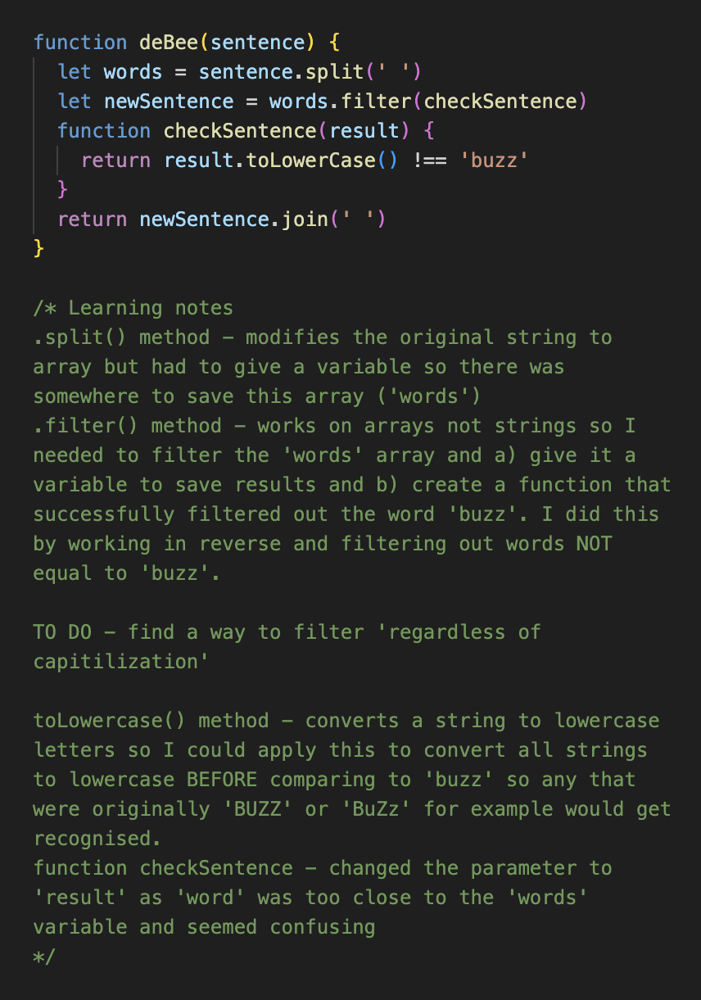

This was one of the challenges I decided to finish a night of study with during the week.
JavaScript Kata, Gradebook Challenge #5: Complete the average function that returns the average of a given array of numbers
After looking online, I found a forEach() method you could use to find an average. Using some example code as a guide, I wrote the code above...it didn't work! I spent half an hour stumped - I took a 'try something' approach and switched different values around to reorder them. I tried changing brackets and other parts with no success. Feeling confused but not defeated, I took a short break then decided to reset everything back to what I had at the start and have another go. It's as I was doing this, I saw I had written 'foreach' instead of 'forEach'!
Lessons learned:
This challenge was an example of good problem solving and reflection. For this particular function, the outline was straightforward so didn't need to create pseudocode which was helpful to begin.
JavaScript Kata, Built-in Methods: deBee Challenge (You will need to split the string into individual words before you filter out all those annoying buzzing sounds!)
This challenge had a couple of methods used previously which I could remember the basic function of. This combined with some online research gave me the framework to put this code together. During the challenge, I kept learning comments underneath as a way of looping back to myself what I had done to make different parts work. I felt happy that this challenge had a good sense of flow and gave me a deeper understanding of new concepts as well as highlighting the actions I had taken to help make the tests pass.
When it comes to asking for help in general - when I've felt reluctant to, it's usually from assuming what someone's response will be or playing out scenarios in my head (judgement, confusion, apathy) that ultimately leads to not asking. Realizing that the conversation has just as much possibility of going positively is the better mindset to have next time I feel this way.